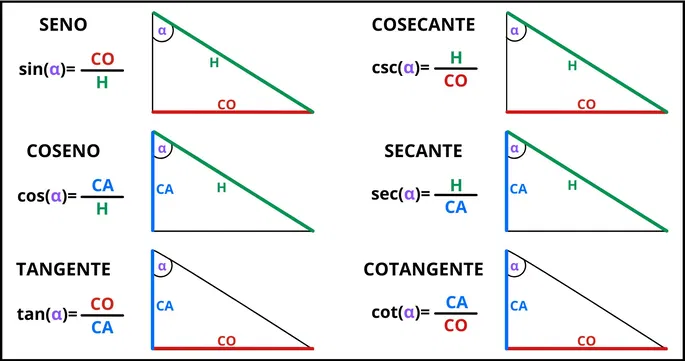
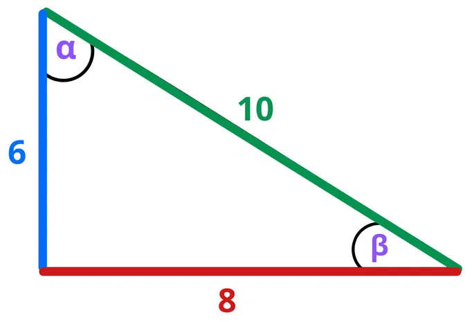
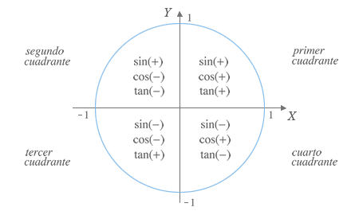
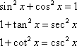
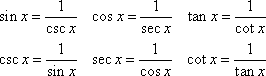

El mundo de las matemáticas: Identidades Trigonométricas y Lanzamiento Inclinado
La Trigonometría
La trigonometría es una rama de las matemáticas que se centra en el estudio de las relaciones entre los ángulos y los lados de los triángulos, especialmente los triángulos rectángulos. Su nombre proviene del griego, donde "trigono" significa triángulo y "metron" significa medida, lo que refleja su enfoque en la medición de estas figuras geométricas.
Razones trigonométricas
Las razones trigonométricas son relaciones entre los lados de un triángulo rectángulo que determinan sus ángulos. Este concepto está relacionado con operaciones matemáticas como el seno, coseno y tangente. Los lados de un triángulo rectángulo están compuestos por dos catetos, o lados, y una hipotenusa. A su vez, los ángulos que describen este triángulo suman 180º en total, siendo uno de ellos 90º (llamado ángulo recto). Los otros dos ángulos son agudos, o sea menores de 90º, y podemos calcularlos a partir de las razones trigonométricas.
Las 6 razones trigonométricas y sus fórmulas

- Seno (sen): Relación entre el cateto opuesto a un ángulo y la hipotenusa.
- Coseno (cos): Relación entre el cateto adyacente y la hipotenusa.
- Tangente (tan): Relación entre el cateto opuesto y el cateto adyacente.
- Cosecante (csc): Es la relación entre la hipotenusa y el cateto opuesto.
- Secante (sec): Es la relación entre la hipotenusa y el cateto adyacente.
- Cotangente (cot): Es la relación entre el cateto adyacente y el cateto opuesto.
Ejemplos de cálculos usando razones trigonométricas
Imaginemos que tenemos el siguiente triángulo rectángulo:

Los valores que conocemos son:
- Cateto vertical: 6
- Cateto horizontal: 8
- Hipotenusa: 10
- Ángulo recto: 90º
- Ángulos desconocidos: α, β
Para calcular el ángulo α, podemos usar el seno:
El valor que obtenemos es 0,8. Sin embargo, este es el valor del seno, no del ángulo. Para obtener el ángulo, usamos el operador arcoseno (arcsin):
.png)
Por lo tanto, el ángulo α es de 53,13º. Lo mismo ocurre para el ángulo β, donde usamos la tangente:
.png)
- Ángulo recto: 90º
- Ángulo α: 53,13º
- Ángulo β: 36,87º

Ángulos Notables
Los ángulos notables son aquellos ángulos que tienen medidas específicas y cuyos valores de las funciones trigonométricas son fáciles de recordar y calcular. Los ángulos más comunes que se consideran notables son:

Conocer las razones trigonométricas de estos ángulos facilita muchos cálculos y simplifica la resolución de problemas trigonométricos.

Signo de las razones trigonométricas
En la circunferencia goniométrica, los ejes de coordenadas delimitan cuatro cuadrantes. El signo de las razones trigonométricas de un ángulo depende del cuadrante en el que se encuentre. En el primer cuadrante, todas las razones son positivas. En el segundo cuadrante, solo el seno es positivo, y así sucesivamente. Aquí te mostramos un gráfico:

Identidades trigonométricas
Las identidades trigonométricas son ecuaciones que involucran funciones trigonométricas. Aquí te mostramos algunas de las más utilizadas:



Ecuaciones Trigonométricas
Las ecuaciones trigonométricas involucran funciones periódicas, por lo que sus soluciones se repiten en distintos cuadrantes. Es importante resolverlas utilizando las identidades trigonométricas fundamentales.


Lanzamiento Inclinado
Es un movimiento vi-dimensional y esta compuesto por dos movimientos, uno vertical uniformemente variado con la aceleración de la gravedad y el otro con la rapidez constante.
Consideremos un proyectil lanzado desde la superficie terrestre con la velocidad inicial y formando un angulo con la horizontal. Si la tierra no ejerciera su atracción, él ocuparía la posición A,B,C; pero no ocurre hací puesto que el proyectil por efecto de la gravedad ocupa el puesto A´,B´,C´ describiendo una trayectoria parabólica. E en este caso el proyectil se puede considerar como el movimiento resultante de estos dos:
- Horizontal con velocidad constante, es decir, el componente horizontal de la aceleración es cero ax = 0.
- Otro vertical con aceleración constante g, dirigida hacia abajo, ay = -g.º

Ejercicio Resuelto
Un futbolista patea una balón con un ángulo de 37° de la horizontal con una rapidez de 15,25 m/s.
- calcular
- a) ¿Cuándo alcanza el balón el punto más alto de la trayectoria?
- b) ¿A que altura llega el balón?
- c) ¿Cuál es el alcance horizontal?
- Datos:
- Alc = 22,14 m
- Usar g = 10 m/s²
- Vox = Vo . cos α
- Vox = 15,25 m/s . cos (37°)
- Vox = 12,17 m/s
- Voy = Vo . sen α
- Voy = 15,25 m/s . sen (37°)
- Voy = 9,17 m/s
a) Tmax = ?
- Tmax = Voy/G
- Tmax = 9,17 (m/s)/10 (m/s²)
- Tmax = 0,94 seg
b) Ymax = ?
- Ymax = Voy²/2 . g
- Ymax = (9,17 m/s)²/ 2 . 10 m/s²
- Ymax = 84,08 (m²/s²)/ 20 m/s²
- Ymax = 4,20 m
Alc = ?
- Alc = Vox . Tv
- Tv = 2 . Tmax
- Tv = 2 . 0,91 s
- Tv = 1,82 s
- Alc = 12,17 m/s . 1,82 s
- Alc = 22.14 m

Conclusion
Como resultado de esta investigación se pudo conocer que las razones trigonometricas como el seno, coseno, tangente, secante, cosecante y cotangente de un angulo las podemos emplear en una circunferencia de radio uno, en donde se pueden formar todos los angulos del sistema sexagesimal y calcular sus razones trigonometricas, asi con solo tener el el eje de abcisas y el eje de ordenadas podemos encontrar el coseno y seno, ademas pudimos recopilar que existen muchos temas relacionado con el topico desarrollado siendo la circunferencia trigonometrica, las razones trigonometricas las diferentes identidades de seno, coseno y de angulos temas que van de la mano.
La trigonometria es importante para la humanidad porque con ella podemos calcular distancias sin necesidad de recorrerlas y se establecen por medio de triangulos, circunferencias u otros puntos, ademas de medir alturas y angulos en cualquier ambito imaginario o real.
Esta rama de las matematicas a pesar de ser larga, complicada y coloquialmente tediosa es fundamental para muchos calculos no solo en las matematicas sino en la arquitectura, fisica o hasta en la ingenieria.
Participantes: Anabella Padovan, Antonella Caraballo, Yudy Rahwan. 4to año A